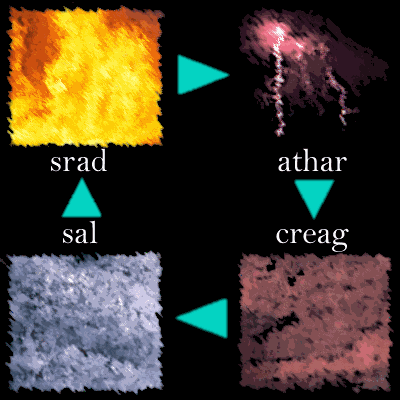
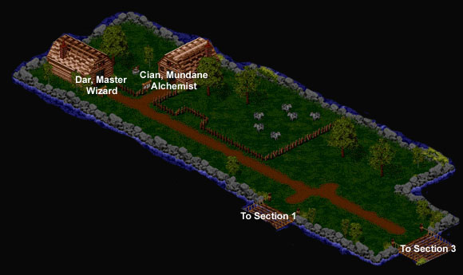
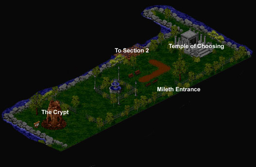

Wizard Lore
by Kedian Ta'Null
Table of Contents
1. Introduction
2. Becoming a Wizard
3. Walking the Path
4. Advanced Wizardry: Research and Lore
5. Combat Techniques
6. Mentoring
7. Personal Thoughts
Appendices
A. Elemental Graymayre
B. Elemental Effect Tables
C. Index of Available Spells
D. Images, Maps, and Figures
Note: References to figures and images in the text can be found in Appendix D.
Section One
Introduction to Wizardry
So, you wish to walk the path of Wizard, do you? You seek to control Nature's energies?
Well, Aisling, I will do all I can to help you. The name's Kedian Ta'Null. Welcome to Temuair, as I'm sure you're seeing it in a whole new light these days.
To begin our journey, you'll need to know what a wizard is. A wizard, in a nutshell, is an Aisling who has the ability to bend nature to his will. In the beginning, you'll be able to call minor elemental strikes upon creatures - but with time, you'll be able to control powerful blows that can cripple even the most hardened dubhaimid.
If you're reading this, it means you probably have a keen interest in being a wizard, so you should have an idea at this point of what element you seek to master. There are four basic elements: Air (athar), Fire (srad), Water (sal) and Earth (creag). A wizard generally masters one element, as it is difficult to achieve the discipline of mind required to master multiple elements.
To aid you in your decision, I've written down a short description of the elements and their effects.
Athar - You are nimble and dextrous; quick on your feet. You could be a rogue easily with training, but you've studied hard to master the lightning. You are most powerful against air. Athar is sometimes cruel and degrading, but can also be delicate.
Srad - Strong and brash, sometimes foolhardy, you are a force to be reckoned with. Fire is your domain, and you use it with impunity. Srad is the beginning of everything, yet has no staying power. As you progress, you will be able to control giant firestorms.
Sal - Delicate yet overpowering, water can caress, or water can drown. You have the ability to do both. At the most powerful levels, you can bring forth tidal waves of tremendous power.
Creag - Monolithic and powerful, you control the very forces of Terra itself. At the highest levels your ability allows you to tear Hy-brasyl asunder.
Earth is slow, traditional, and stable.
If you haven't decided on an element, don't worry that much; I would suggest learning the basic "beag" (minor) elements first, using those, and then determining which is good for you.
At first, you'll be very weak, so you'll need to be careful. If you are an srad mage, you will eventually grow very strong with the body, but this is the exception for most wizards.
With that basic overview, let us begin our discussion of magick art.Section Two
Becoming a Wizard
To become a Wizard, you'll first need to find an Aisling who will mentor you in our art. You start out in Mileth, which you can find a map of in the Mide Province library ((http://www.mideprovince.com/maps/mileth.html)). Study this map well, as it will help you find the various services and goods that are offered in the village. I suggest you ask around in the city for an Aisling that will mentor you. Remember that if I am available, I am more than happy to guide young Aislings down the path of wizardry. You do know how to speak to other Aislings, don't you? If you can, simply call for me, and I will aid you in your quest.
Once you've found a mentor, he will take you to the Temple of Choosing (illustrated in Map 2). It is here that you will take an oath and be initiated into the path. Once this is done - you've taken the first step towards the mastery of magick - you've become a Wizard.
I bet you thought that was too easy, right? Well, there's more to a wizard than taking an oath. Now it's time to start earning that Aisling right of yours. We'll
start with a discussion of basic magick and what a new, upstart wizard should work towards.
Section Three
Walking the Path
Now that you're on the path, we can delve into the heart of magick and begin a detailed discussion of what it means to be a wizard. After you've been initiated, travel to Dar, the Master Wizard of Mileth (illustrated in Map 1). He is across the bridge from the Temple of Choosing - just keep walking until you see a house.
Dar can teach you in the way of the wizard. The magick that he can teach you is enumerated below:
beag srad, athar, sal, creag
srad, athar, sal, creag
beag (srad, athar, sal, creag) lamh
(srad, athar, sal, creag) lamh
It must be noted that there is another Master Wizard in Temuair. Hadrian lives in Suomi, which can be reached from going to Undine and walking to Suomi. If you're having trouble finding it, ask a fellow Aisling to show you the way. Hadrian
teaches incredibly advanced spells, which are discussed in further detail in the "Advanced Wizardry" section.
Let us begin a discussion of these different spells and what they mean.
beag is the Aisling word for "minor". This is among the first spells you will learn. They are minor spells of the elements - small lightning bursts, minor earthquakes, fireballs, and a downpour.
All spells have an associated cost to learn; Dar, or for that matter, any Wizard master, usually requires compensation in the form of gold, items, or both for sharing their secrets.
To start, I suggest you learn the four forms of minor elemental magic, so that you can experiment with them. You can earn the gold you need to learn the spells by adventuring in the Mileth Crypt (illustrated in Map 1). Be careful - and DO NOT traverse lower than the first floor until you have reached at least your seventh insight. The monsters grow stronger as you go deeper into the crypt. A smart Aisling will adventure in groups, and with a priest - but if you cannot, stay close to the first floor exit.
For those that are interested, a later section of this Guide, "Battle Tactics", details the tactics and methodology of combat as it applies to Wizards.
You will find that the monsters drop various items. You can sell these items to earn gold for buying better equipment (For more information on what is advisable for a wizard to wear and use, consult the section on Items and Equipment).
Cian, the Mundane alchemist, will buy rotten food from you. No one knows why Cian needs it - the only explanation he gives is "mundane research". Dar, on the other hand, needs spider eyes, bat wings, and viper glands for his Wizardry research.
Once you've learned the four beginning elements, you can begin to think about what element you want to master. After the four minor elements, it becomes increasingly difficult to master more than one. Take time, and think about what element best represents yourself.
A side note: When you are still mastering your given element, you may wish to talk to a fellow Aisling wizard and have that wizard mentor you (You must have reached no more than the fifth insight to be mentored). Read the section on "Mentoring and Guides" for more information.
Once you've made that decision, you can go about learning the more advanced elemental spells. To learn the base attack for any element (for instance, "athar"), you must advance your minor elemental attack to a certain degree - at least 10 spell levels (see figure 2)
Upon mastering a good elemental base attack, you can expand into the lamh series of spells. lahm is the word for "close". This means that the elemental attack will only affect those monsters that are right next to you. Until recently, the spell was ineffective, but lately, it seems to have started to work regularly.
When you have mastered the base elemental spells, you will find that you can do much more damage to monsters. Keep adventuring in the Crypt until you have reached at least the first circle (10th insight); then I suggest you try the East Woodlands or the Castle of the Dubhaim. The East Woodlands can be reached by exiting Mileth and taking the road there; the Castle of the Dubhaim can be reached by taking a boat from Abel to Rucesion, and then walking to the Castle.
Beware of the Woodlands, as the beasts there are powerful, and will strike back with equal amounts of magick! If you go - for Luathas' sake, take a priest - or better yet, adventure in a group. It is never a good idea for an Aisling to adventure alone. There is safety in groups, young Wizard. None of us like to visit Chadul's domain and speak with Sgrios. Do yourself a favor and do not let his ghastly claws touch your soul!
The Castle of the Dubhaim, in this Wizard's opinion, is less taxing than the Woodlands, as the monsters here by in large do not know of the magick arts, and will not kill you in one stroke as some of the more advanced Goblins and Kobolds of the forest will.
So now, you're well on your way to becoming a wizard. You've decided upon an elemental path, and you are eager to learn more. Other sections of this manual
cover more advanced knowledge:
As an Aisling wizard you may seek a mentor, or become a Guide. Consult the latter part of this manual (Mentoring and Guides) for more information.
Those that have mastered the concepts of basic wizardry will want to read Advanced Wizardry, for a discussion of what is available to be learned beyond the spells that Dar teaches - things such as lore, special skills, research, greater elemental spells, and the abilities that other masters can teach you.
Section Four
Advanced Wizardry
The development of magical lore and skills
When you have mastered the minor elements and a greater form of another, you're well on your way to specializing in an element type. Be warned that from here on in it is increasingly difficult, if not impossible, to change your elemental type.
You may have noticed that Dar teaches "skills" in addition to secrets. A few of the skills and lore that a wizard might learn are below:
look - This wonderful skill allows you to get a sense for where you are in Temuair. It can be learned from Devlin, the Fae priestess in Mileth.
magic lore - This skill allows you to divine any magical qualities of an item such as a sword, ring, or necklace. It can be learned from Dar.
potion lore - This skill allows you to immediately learn the effects of a potion (whether it heals, revives, or has another effect). It can be learned from Hadrian in Suomi.
Spells not related to wizardry
There is only two miscellaneous spells that Wizards can learn as of now (to my knowledge):
daichaidh - This spell will return you to the safety of the inn in Mileth. It requires a very advanced and wise mind to learn it, and not many Wizards are capable of mastering it.
nis - This spell will tell you what time it is in Temuair. Very useful for remembering if you're late.
Advanced wizard spells
Hadrian, the Wizard master in Suomi, teaches advanced wizards the most powerful of the elemental spells. Those spells are discussed below:
mor athar, creag, sal, srad
athar, creag, sal, srad meall
"mor" means "greater", and is a much more powerful elemental strike than the base element spell such as "athar". meall will attack a cluster of enemies with an elemental strike instead of just one target. All of these spells are difficult to learn, in that Hadrian requires quite a bounty for teaching them, and that only the most skilled wizards can learn them.
You can also learn ard and gar forms. Ard is the most powerful elemental strike, and gar is a souped-up version of meall.
Wizardry Research: Advancing the art
Wizards who want to advance beyond mere elemental spells may also conduct wizardry research. Dar, in Mileth, offers this ability, if you sit down at one of his tables. Walk between the two tables, and Dar will bring out his research equipment.
When you research, it is best to take an assistant, and do the research together. I recommend that only the most advanced wizards do research alone, as it can sometimes be dangerous. Doing the research with an assistant (that has reached at least their 11th insight) increases the chance of success.
Once you start researching, it will become well known that you are doing so. After seven sessions of research, you will master the
There are currently three topics of research that a young Wizard can study:
Sorcery - The development of arcane scrolls containing magick. These scrolls can be used by anyone. Currently, Dar will support research into making magick scrolls that will bring you to safety if you should be injured in battle - "Songs of Home". You'll need parchment scrolls to practice this, which Dar can sell you.
Enchantment - This is the research into infusing magical qualities into items. You can bring a pair of beryl, coral, ruby, or other type of earrings, and try your hand at giving them an added power. Or, you can try altering leather or iron gauntlets. The items must be in perfect condition before you experiment on them.
Alchemy - The study of mixing and creating potions with magick power. Dar will help you learn how to make Smokey Spheres (explosives), or potions of life restoration. You will need either blue powder or the gland of a viper.
More information on what must be used in research may be had from Dar, who will tell you everything you need to know.
I hope that you have learned well from my writings here. If you have become a powerful wizard and wonder where the path lies for greater achievement, begin collecting lore and developing your own theories of wizardry. Research is the only thing that will continue to advance the art of magick.
Section Five
Combat Techniques
Techniques of the wizard
You will learn that as you develop further and further mentally, you sacrifice your physical development (to some extent, srad mages being the obvious exception). Most mages will have a much higher reserve of mana than vitality, and you must enter into combat with a firm grasp of this knowledge.
Until you have mastered a basic spell, you will be forced to fight with weapons. Once you have mastered at least a base elemental form, disregard the iron and steel implements of man. It is critical to a wizard that he not wear items meant for combat such as gauntlets, bracers, and heavy armor, or wield swords such as the claideamh. All of these will interfere with the flow of mystical energy through your body and you will find that in some cases your ability is crippled completely. However - and this is a rare exception - you will find implements of man that mysteriously do not drain mana. My good friend Mauve once presented me with a pair of leather greaves that I could wear - and drained no mana!
Remember, we bend nature to our will. Our weapons are the elements, not the tools of man. A wizard who relies on these implements instead of mastering magic will find himself quickly overwhelmed by the challenges that the darkness of Temuair can put forth.
Adventuring in groups
This Aisling highly recommends adventuring in groups. There are some exceptions, but, especially for the Woodlands, travelling in groups is imperative, and might save your life.
When you travel in groups, the composition is not important, as long as you have a priest or two. Most priests feel comfortable being responsible for two to three people, so figure on trying to take one priest for every three Aislings including yourself.
I prefer travelling in groups of no more than five. They are difficult to manage and during heavy combat can become impossible to maintain (especially if you have only one or two priests). I usually travel with one or more wizards, a warrior or monk, and one or two priests.
In a group, most wizards will not get involved in the hand to hand action unless they cannot escape a monster, but will fall behind and cast spells from afar. The obvious exception to this is the sal mage, which, unfortunately, has to be incredibly close in order for their spells to work.
It is a good idea to rest when you are low on mana. As you drain your mana reserve, you will begin to feel weak and eventually your magic won't work at all. A wizard without mana is by in large impotent and must rely on others to protect him. Don't let this happen - rest regularly during combat. Let the priests heal your group, and let the warriors and monks rest.
Adventuring alone
Although it is very dangerous to adventure alone, there are some exceptions to this rule. The notable one is the Castle of the Dubhaim, where the monsters do not know how to cast magic. Here, a young wizard can earn a good deal of experience if he is quick on his feet and can avoid the gnashing teeth and claws of the dubhaimid.
Note well, though, that adventuring alone is often incredibly boring. After a few hours of work, it becomes tedious. It is much more fun to adventure in groups, as the social benefits, at least to me, more than overcome the desire to hoard a larger share of experience or wealth.
If you do choose to adventure alone, I suggest you be very strong of mind and body, and perhaps take some Songs of Home with you (which any advanced wizard can create by researching sorcery). You might also want to take along "purple potions", the common name for potions of healing.
Section Six
Items and Equipment
By now, you're wondering what a Wizard should wear. You'll notice that the shops of Temuair sell a vast selection of wares, everything from boots to rings.
First of all, you should purchase enchanted items based on your elemental path. Rings that increase strength are good for srad mages, whereas Shagreen boots which increase your dexterity are good for athar mages.
At first, you won't be able to wear most equipment, save for a shirt and a stick. Once you've learned magic and can earn more gold, you may want to consider purchasing rings. There are a wide variety, and I recommend browsing to find ones that fit your element, but in general I recommend Emerald rings for those wizards who are weak of body (as they add a great deal of vitality), or Jade rings, which, while being incredibly expensive (100,000 gold coins) add a sizeable amount to your available vitality and your mana pool.
Once you've reached the 11th insight, you can buy the typical garb of the Wizard - the Journeyman. This can be purchased in Abel from one of the merchants in the town.
As far as other accessories, there are various earrings and trinkets that will increase your ability. The equipment you should buy is different for each elemental path - I recommend experimenting, and learning well the requirements of your elemental choice, as far as spells and lore goes. You can then make an educated decision on which equipment is best for your abilities.
Section Seven
Mentoring
Being a mentor, and guiding Aislings down the path of wizardry, is one of the most rewarding experiences a Wizard can have. It is beneficial to both mentor and student, and provides the student with knowledge that he might not have otherwise learned.
Once you have reached the 15th insight, you can mentor other Wizards. To be a mentor, the student must be between the second and fifth insight. Once you have mentored a student, the relationship will continue until your student has had his 11th insight. When that goal is reached, both Aislings will recieve experience, which decreases according to the number of times your student has visited Sgrios while being educated by you. Don't let your student die, and you will earn far more experience.
Mentoring also entitles you to give your student various lectures in wizardry subjects, such as the Graymayre (see Appendix D) and the elements. You can learn these special "lecture" spells from Dar. In this manner, mentoring allows both the student and mentor to gain valuable experience.
I advise you, take your mentoring seriously. Do not simply accept any Aisling under your wings; make sure that he or she is a dedicated wizard, and wants to learn more of the esoteric knowledge of the trade.
And to those who would be mentored - know your teacher beforehand. Do not accept a mentoring relationship out of hand; get to know the Aisling that seeks to mentor you. You will both find it more rewarding.
Section Eight
Personal Thoughts
In conclusion, I present the reader with some of my own thoughts and philosophies related to the art of wizardry.
The morality of wizardry
As I have discussed in my earlier circular "Wizards and Magick", I do not believe wizardry to be inherently evil, but because man uses it, it has the ability to be. You will be tempted throughout your existence as a wizard to the darkness, but only the dubhaimid lurk there.
The shadows war, the drowning of Hy-brasyl - we know what the misuse of magic can cause. I pray that Aislings will not make the same mistake twice.
An excerpt from my earlier writings:
"I have studied the wizard craft for a long time. Looking back, it seems like aeons. I am close to rising to the fourth circle, and while the most advanced magic still baffles me and eludes my mastery, I have come to several conclusions about the essence of magick.
Long ago, a master of the art taught me that every person, every living being, every creature borne of Terra and living, aligns with an element - the four basic elements being sal, creag, athar, and srad. We know the relations between these elements exist, and we can even define them to some point: srad, being weak against the power of sal, and so forth. The master taught me that magick comes from the energy of Terra. Many people do not consider this simple aspect of magick because it doesn't occur to them to think on such a large scale. The earth is the firmament of not only life, but the elements. Without the earth, there would be no magick because there would be no power for it.
I learned that every living being contains a nearly indestructible essence. When Sgrios comes with his greedy claws, even he cannot destroy the essence, although he can rip it from your earthly body. These essences, each aligning with a specific element, is what gives rise to magick power.
Terra, Gaia, whatever name you wish to call it, is composed of these essences. The mystic energy gives rise to form and color. The energy is attracted to those who show exceptional talent, and therefore arise Aislings, ready to challenge the status quo maintained by the mundanes, who care little about the world beyond their own making (their souls being dull and not able to recieve such energy) What surprises most people is that this energy has no specific 'morals'. Meaning, the essences are not inherently evil or good; it is the world, and the Darkness around them, that corrupts the neutrality into evil. Wizards especially must fight a battle with the powers they recieve upon their awakening to their Aisling powers; the change in their essence, the influx of new powers, gives rise to a certain chaos within the soul. Priests have it easier, being drawn naturally through their personalities to the healing arts, whose goal is not to harm.
Wizards possess powerful battle magick that may be used for either evil or good, and it is during their awakening that wizards are very susceptible to corruption. The Darkness seeks to corrupt these wizards in their quest to control and harness this chaos. But the Darkness does not select only wizards; it corrupts any Aisling whose soul has awakened from the mundanes."
Reflect on this, and always remember. Sgrios, Chadul, and the Chaos of the darkness seek our destruction. Never aid them. They are daemons of the worst kind, and will rip your soul to shreds given the chance.
An open invitation
I invite readers of this manual to discuss with me the material contained in the manual. Soon, the Society will distribute "A Guide to Mystical Energy", which is a composition of the most recent collected works of the Runic Terra Society. The result of our efforts, it is a treatise on the nature and composition of mystic energy.
Please feel free to talk to me at any time. I enjoy lively philosophical discussions, and welcome the opportunity to hear your thoughts.
The Runic Terra Society
I invite all Aislings who are interested in the study and advancement of magick and mystical energy to visit our grove ((http://www.mideprovince.com/runic)). There, you will slowly begin to find more and more of our works filling the shelves of the library.
Appendix A
The Graymayre
I include the teachings of the master wizard Dar here as a reference, as I remember them. Not many Aislings besides wizards will understand the terms of the tuatha, although I invite all to read and share this knowledge.
beag - "little". A minor spell.
example: beag ioc (minor heal)
mor - "greater". A greater form of a base element (beyond athar, creag, etc)
example: mor athar (greater air)
ard - "great". An incredible elemental spell, which only a few great wizards learn
Search the far western lands towards Undine, and you will find a teacher of this spell.
example: ard srad (great fire)
fein - "self". A spell which affects your immediate being.
example: beag ioc fein (minor heal, self)
comlha - "group, companions". A spell which affects your group or more than one person.
example: beag ioc comlha (minor heal, group)
lamh - "touching". A spell which affects those nearby.
example: beag srad lamh (minor fire, touching)
meall - "group, cluster". A spell which affects a cluster of Aislings or monsters instead of just one.
example: sal meall (water, clustered)
gar - "near". A spell which affects nearby Aislings or monsters.
example: beag srad gar (minor fire, nearby)
deum - "potion". A liquid combined with mystical energy to form a magic potion.
example: beothaich deum (a revival, or "red" potion)
Appendix B Elemental Effect Table
Below is a guide to the effectiveness of elements when pitted against each other. Know this well, and you will go far. The blue arrows indicate a strength against another element, or domination: for instance, athar dominates creag, while creag dominates sal.

Appendix C
Known Spells
Here, I have listed the different spells currently available to be learned. This list is bound to change, and the only way to make sure is to go and visit the various masters yourself. I have not listed the bounties or the requirements for the spells here as an incentive to make you visit the masters. *smiles*
Spells available in Mileth, from Dar:
beag athar minor air
beag creag minor earth
beag srad minor fire
beag sal minor water
athar air
creag earth
srad fire
sal water
beag athar lamh minor air, touching
beag creag lamh minor earth, touching
beag srad lamh minor fire, touching
beag sal lamh minor water, touching
athar lamh air, touching
creag lamh earth, touching
srad lamh fire, touching
sal lamh water, touching
Elemental Lecture Elemental lecture for students (mentoring)
Graymayre Lecture Graymayre lecture for students (mentoring)
Spells available from Hadrian in Suomi:
mor athar greater air
mor creag greater earth
mor srad greater fire
mor sal greater water
athar meall air, cluster
creag meall earth, cluster
srad meall fire, cluster
sal meall water, cluster
As for the spells available in Undine...You had best seek that master of wizardry out yourself.
Miscellaneous spells available
daichaidh - spell of recall. This spell will bring you back to the safety of the Mileth inn. Devlin, the Fae priestess of Mileth, can teach this to you.
mentor - mentor an Aisling. This will allow you to mentor without travelling to Dar. This requires exceptional wisdom to learn. You can learn this, along with guide, from the Fae priestess Bertil in Suomi.
guide - initiate an Aisling. This will let you initiate another Aisling in your path. This also has exceptional requirements.
Appendix D Maps and Figures
Map of Dar and Cian in Mileth (Map One)

Map of The Crypt and Temple of Choosing in Mileth (Map Two)
